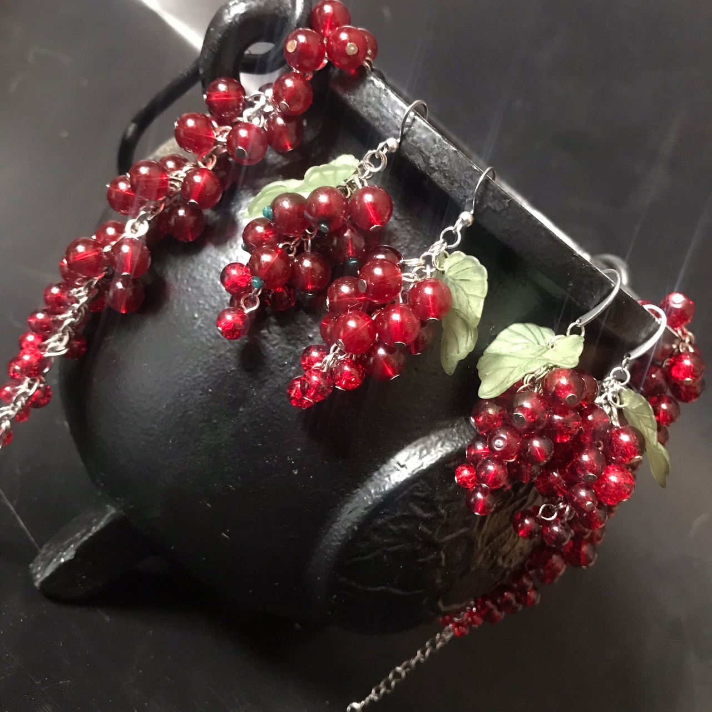
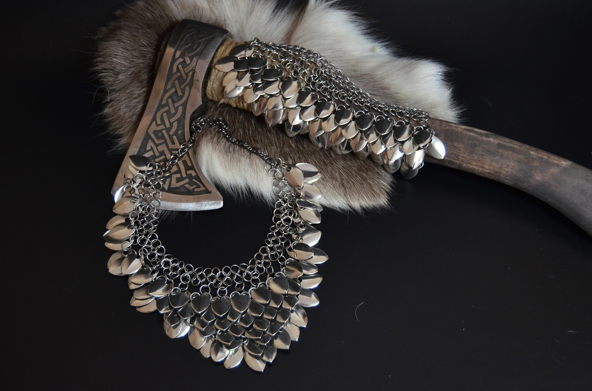
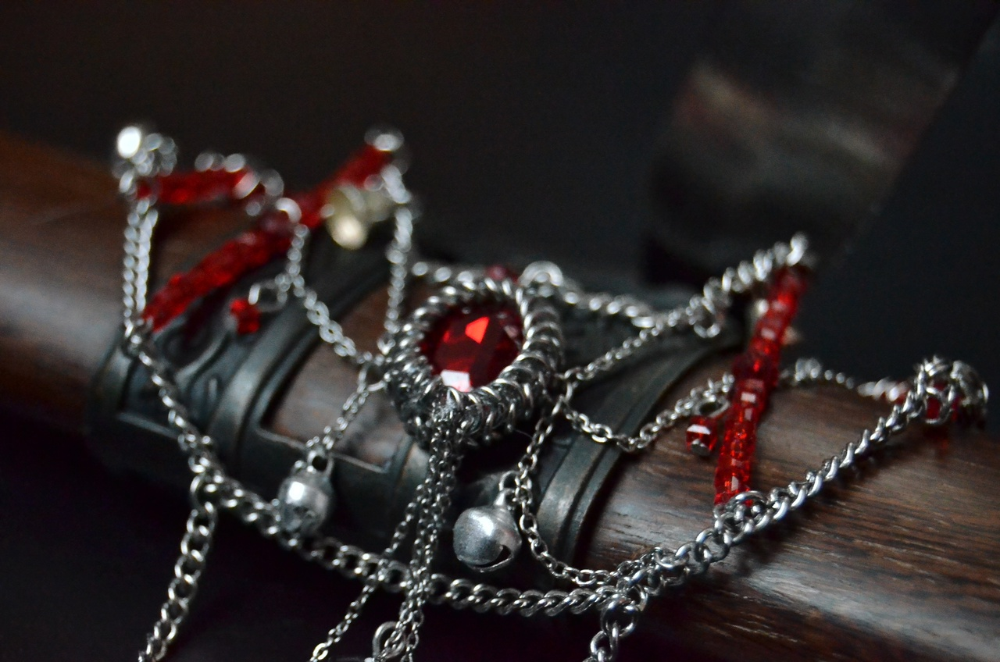
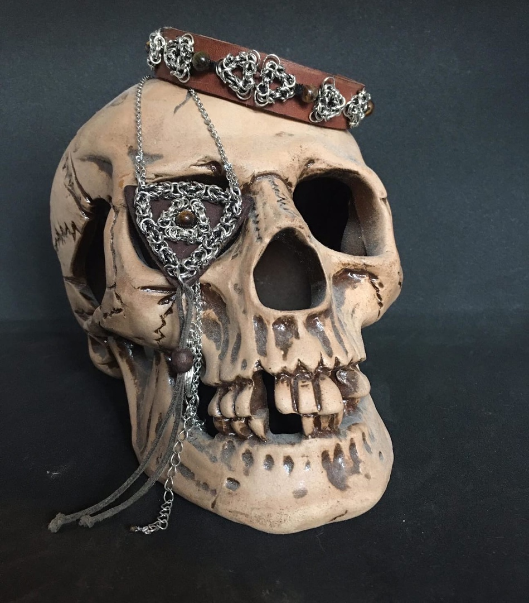
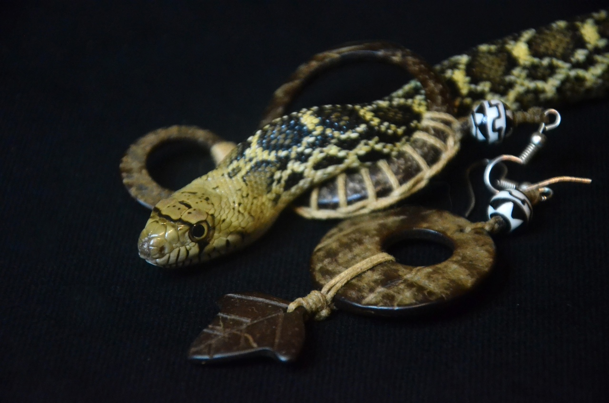
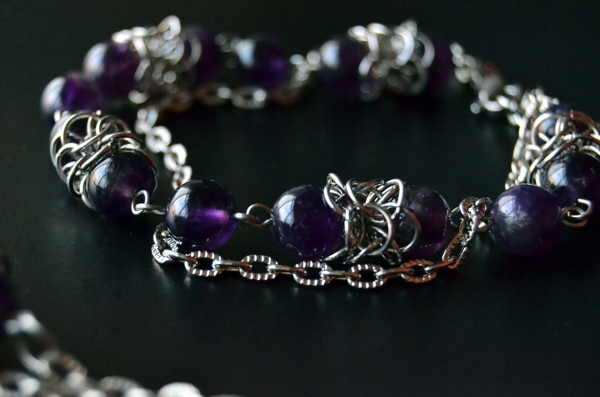
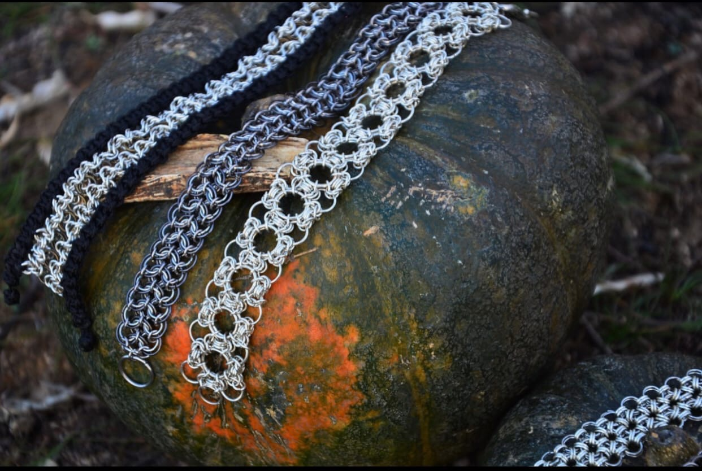

Делает украшения из кольчуги. Загрузила себя клиентами под завязку.
Стала счастливой. Переехала в Москву, вышла замуж.
Сколько тратит на рекламу? Как часто пишет посты? Сложно ли было научиться продвижению?
Это небольшое интервью с нашей ученицей Александрой Дробот.
Мы взяли у нее короткое интервью:
— Расскажи, что было до курса?
— До курса у меня ничего не было, я ж все создавала в процессе. Я с детства еще в рукоделии, много разных техник испробовала, и на вас подписалась еще когда ловцами занималась. Там было все неспешно, 1-2 клиента в месяц, ценник был 6-8к.
Долго не могла определиться, что хочу вообще, поэтому пока не утвердилась в кольчуге, не шла на курс. Я тогда работала еще на «нормальной работе», у меня такая полная пачка страхов была - сейчас я в шоке, что меня такие мелочи вообще волновали)
— Какие сложности были во время обучения на нашем курсе? На сколько сложно было учиться? За сколько прошла обучение?
Сложность была в начать))) Я хороший мастер, хороший продажник, хороший текстовик, но этого недостаточно, иначе вы бы мне были на хрен не нужны))
Мне было сложно побороть страх, что не получится - оно не выстрелит, оно никому не надо, какая же тут стабильность, а если я заболею, а вдруг что, никаких отпусков и пенсии. Вот это страшно было. Пока я не поняла, что самое стремное я задвинула в угол, потому что ну оно же не сейчас.
Самым стремным оказалось то, что я могу проснуться в 80 с осознанием того, что всю жизнь я работала не там, где хотела, была не тем человеком, что у меня был шанс, и не один, а я теперь жалею о бесцельно просраном, когда уже поздно что-то делать.

Я полгода где-то старательно боялась, находила миллиард отмазок, пока меня вот так не стукнуло хрустальными очками об чугунный зад реальности. И я открыла курс. Прошла его до конца я спустя год с каким-то хвостиком))
Ибо я сделала первые уроки с лету, на 4м получила клиентов с приветственного, потом дошла до оформления и завязла - недели две снимала свой арсенал как больная))
Потом еще за неделю дошла до 18 урока, и все. И дошла до предела пропускной))
Не, я правда впахивала над курсом, я уволилась с работы к моменту создания группы. У меня морковка была и впереди, и в жопе, и в ушах, и пару раз я только ей и питалась, было и такое, пока не начала учитывать кассовые разрывы))
Учиться было не сложно, там курс-то подробный до одури.
Сложно было затыкать внутреннего критика, который постоянно пиздел, что «Да куда ты лезешь, да ничего не получится, таких как ты знаешь, сколько?»
В какой-то момент я разозлилась и поняла - таких, как я, нет!

Вот именно так, как я, не может никто. Никто не может писать как я, думать как я, жить как я. И когда пошли первые заказы со словами «Сделай как ты видишь, я знаю, что мне понравится», «Мне все равно, что это будет, просто пусть будет украшение от тебя», «Давай ты предложишь эскиз как видишь, а я соглашусь», я поняла, что я была чертовски права)
Так что курс я прошла частями, а ту часть, которая мне реально была нужна, прошла за полтора месяца и окупила тогда же курс.
Рекламу до сих пор пускаю крайне редко, с января ее не было.
— Какие сейчас действия делаешь для привлечения клиентов? Как часто пишешь посты? Запускаешь ли рекламу?
— Давай с простого, рекламу – раз в год)) Вот думаю в свободное время в январе между салатами и агонией пощупать таки новый каб.
Сейчас все действия это посты и рассылка. И органика чистой воды. Я не стесняюсь комментировать то, что мне интересно - а мне интересно то, что мне по духу подходит – а там сидят те люди, что похожи на меня – а там мы зацепились языками и вот уже туда три браслета едет.

На самом деле, схема простая как сатиновые трусы, но только в одном случае – если тебе реально в кайф так делать. Если продать стоит не на первом месте.
Я горжусь тем, что я делаю, потому что выгнала всех ублюдских тараканов из своей башки. Поэтому рассказываю про свое ремесло без стеснения и без навязчивости) Чаще всего я просто срабатываю как стенд своих изделий – я на всех фотках со своими украшениями, и когда люди заходят посмотреть, они в них залипают))
Недавно сходила на концерт блогера с такой же, как у меня, аудиторией, так я молча троих привлекла, чисто голову подперла рукой с браслетом)) И все, в перекуре «А это откуда? Ваши? А картинки есть, доктор? А найти вас как?»
Посты пишу в зависимости от целей и точки контентной воронки. Если это активная фаза, то часто, в самый пик раз в день. Но они короткие, как правило, ибо догоняющие.

А так раз в хрен знает, иногда 3-4 дня, иногда раз в неделю. Зависит еще от загрузки. Толку писать посты и конвертить продажи, если у меня времени нет ни фига?
А на личной пишу как хочется, в основном, о себе, иногда про то, что у меня там в группе что-то интересное творится, и можно подписаться. Вот вчера писала про поездку к брату, до этого про то, как за материалами съездила, до этого, что в нашей семье есть традиция гореть раз в год)))
Моя страница это я. И чаще всего, кстати, люди сначала приходят именно туда и общаются со мной, а потом уже хотят украшений.
Есть какое-то странное заблуждение, что надо пахать как папа Карло, чтоб вести все это и не одуреть, но это не так. Если деть хаотично что-то, попадающее под категорию «полезные действия», то да, это 24/7 работа. Если понимаешь, что делаешь, есть план и стратегия, то ну минут 10 в день у меня уходит.

Единственное, что я очень быстро пишу посты, тут у меня точно фора, но тем не менее – ну двадцать минут в день на все это социально-сеточное. В конце концов, если там сидеть дольше – а жить когда? А работать когда? А клиентов конвертить когда? Поэтому хаос никогда не приводит к желаемому результату, нужна система
— А можешь поделиться, как изменилась жизнь, когда увеличился доход? Может что-то купила себе? Съездила в путешествие? Что-то смогла сделать, чего раньше не могла позволить себе)
— Я смогла стать счастливой. Ведь все эти «Я машину купил», «А я за границу съездил» это ж мерило чисто денежное, у всех свои потребности. Главное, что деньги это свобода, они не цель. Это инструмент, который позволяет быть свободной, не ходить на «нормальную работу», покупать то, что нужно, не смотря на цену, а выбирая качество.
Это возможность сказать «А поехали в горы на выходные?» — А поехали. И пофиг, что конкретно с горами. Так один раз только проканало, потому что мы оба работаем, и Витя такие финты откалывать не может часто))
Я покупаю те материалы, какие хочу, например. Сразу много, чтоб плести в свое удовольствие. В свое интересное. Камни, сталь, обучения вглубь ремесла.

Ноут за сотню.
Я спокойна, что мы и собаки всегда будем одеты, обуты, сыты, у нас будет крыша над головой и здоровье, а значит, дальше мы можем делать что хотим, ресурс есть.
Доход увеличился спустя полтора месяца после начала, потом раза три в год я повышала цену, потому что доходила до предела. Сейчас средний чек 6000, работы под завязку. В среднем это 150-160к в месяц, это 25-27 украшений. Недавно вот был новый порог в 200к преодолен.
Я себе все позволила, что хотелось, я перестала нервничать, дергаться, постоянно переживать. А еще такая уверенность позволила навести и общий порядок – выкинуть идиотов из жизни, уехать пожить в другой город, полюбить, выйти замуж, вернуться к Москве.

Я устроила себе шестидневку с гибким графиком. Я успеваю и с друзьями встретиться, и скататься вот в Рязань, навестить брата в армии. И вот в отпуск в горы метнуться.
Клиентов я регулирую. Редко бывает, что случайно как жахнуло или наоборот, как провал пошел. Если пошел, кстати, я отдыхать рву когти, вообще без зазрения совести)) Я ж потом пару действий сделаю и пойдет поток более широкий, надо запастись силами) Вот в сентябре не рассчитала, когда розыгрыш сделала, в итоге 200к, но мозоль в центре ладони)))
Короче, я счастливая) Я делаю то, что люблю, но в том темпе, чтоб наслаждаться жизнью, чтоб не считать дни до зарплаты, чтобы получать удовольствие, а не урывать его кусками.
И если бы я тогда не наткнулась на твой пост, нихера бы не было. Со всеми моими навыками я бы не справилась. Я бы завязла без системы.
*****
Действительно, когда в свой хаос ты вносишь порядок. Когда вместо спонтанных действий ты внедряешь системные, то твой доход неуклонно начинает расти.
Именно такой системе мы учим на курсе ВК-Бабло.